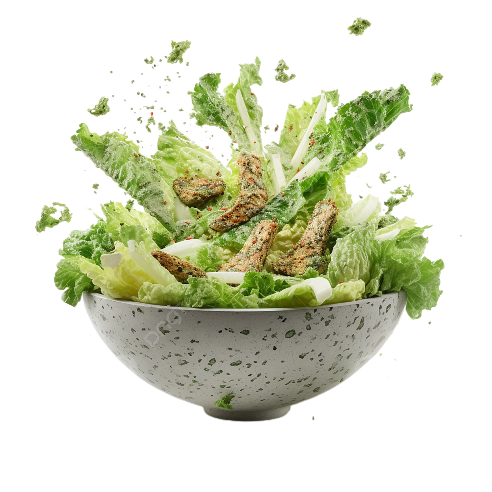

Receta de Ensalada César
Una deliciosas y Fresca Ensalada
Ingredientes:
- Lechuga romana: Es la base de la ensalada. Debe ser fresca y crujiente.
- Crutones: Cubos de pan tostado, preferiblemente pan blanco, con un poco de aceite de oliva, ajo y hierbas.
- Queso parmesano: Rallado o en lascas, para darle un toque salado y sabroso.
- Aderezo César: La clave de la ensalada.
Ingredientes para el aderezo César (versión básica):
- Yema de huevo (opcional, para una textura más cremosa)
- Anchoas (opcional, pero tradicionales)
- Ajo
- Jugo de limón
- Salsa Worcestershire (Perrins)
- Aceite de oliva virgen extra
- Mostaza Dijon
- Sal y pimienta al gusto
Ingredientes opcionales
- Pollo a la parrilla: Agrega proteína y la convierte en una comida completa.
- Tocino crujiente: Para un toque extra de sabor.
- Huevo cocido: Agrega otra textura y proteína.
Preparación del aderezo César:
- Ajo y anchoas (opcional): Pica finamente el ajo y las anchoas (si las usas). Puedes machacarlos juntos con un poco de sal para formar una pasta.
- Yema de huevo (opcional): En un tazón pequeño, coloca la yema de huevo (si la usas).
- Agregar ingredientes: Agrega el ajo, las anchoas (o la pasta), el jugo de limón, la salsa Worcestershire y la mostaza Dijon a la yema de huevo (o al tazón si no usas yema). Mezcla bien.
- Emulsionar: Mientras bates constantemente, agrega lentamente el aceite de oliva en un hilo fino hasta que el aderezo se espese y emulsione.
- Sazonar: Sazona con sal y pimienta al gusto.
- Refrigerar: Refrigera el aderezo mientras preparas el resto de la ensalada.
Preparación de los crutones:
- Cortar el pan: Corta el pan en cubos de aproximadamente 1 cm.
- Sazonar: En un tazón, mezcla los cubos de pan con aceite de oliva, ajo en polvo, sal y pimienta.
- Hornear: Extiende los cubos de pan en una bandeja para hornear y hornea a 180°C (350°F) durante 10-15 minutos, o hasta que estén dorados y crujientes.
- Enfriar: Deja enfriar los crutones antes de agregarlos a la ensalada.
Preparación de la ensalada:
- Lavar y cortar la lechuga: Lava y seca bien la lechuga romana. Córtala en trozos grandes.
- Armar la ensalada: En un tazón grande, coloca la lechuga romana.
- Agregar aderezo: Vierte el aderezo César sobre la lechuga y mezcla suavemente para cubrir todas las hojas.
- Agregar crutones y queso: Agrega los crutones y el queso parmesano rallado o en lascas.
- Servir: Sirve inmediatamente.